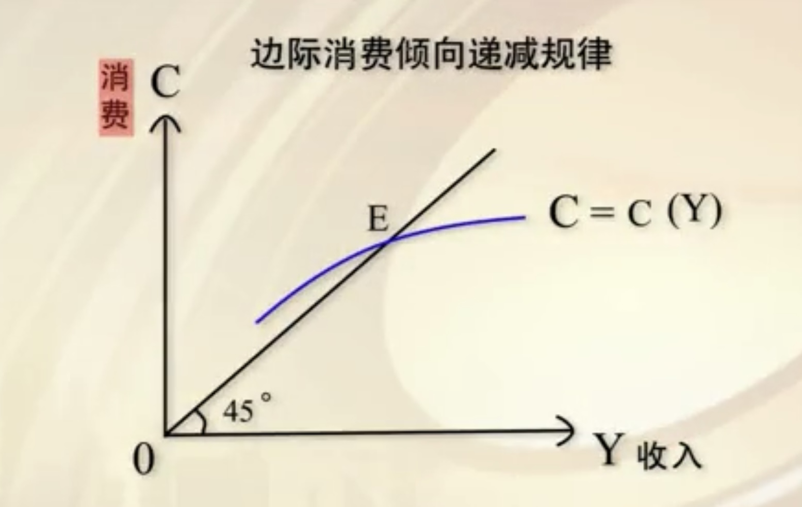
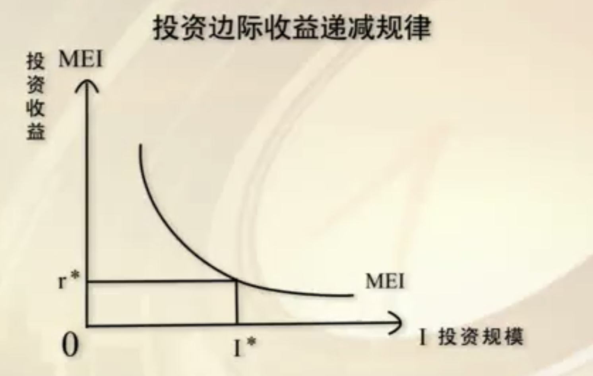
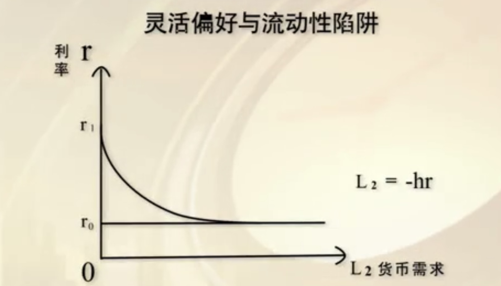

宏观经济学学习笔记
宏观经济学——导论
学习目标
通过本章学习，你需要掌握和了解以下问题：
1、宏观经济学是怎样一门学科。（1.1）
美国经济学家夏皮罗认为：(最早定义)
宏观经济学考察的是国民经济作为一个整体的功能，包括国民经济中物品与劳务的总产量和资源的总利用量是如何决定的，以及引起这些总量波动的原因是什么。
叶航教授认为：
宏观经济学是以整个国民经济活动为研究对象，采用总量分析的方法，研究社会经济活动各种总量关系及其变化规律的经济学。
2、宏观经济学和微观经济学有哪些差别。（1.1）
微观经济学的创始人：阿尔弗里德•马歇尔（1842-1924）
- 代表作：1890年出版的《经济学原理》
宏观经济学的创始人：约翰•梅纳德•凯恩斯（1883-1946）
- 代表作：1935年出版的《就业、利息和货币通论》
差别之一：(1.1)
- 微观经济学：理性人假设
每个人都是理性的，选择最优
- 宏观经济学：合成谬误假设
微观每个人都最优，整体不一定最优
差别之二：(1.2)
- 微观经济学：市场出清假设
供不应求和供过于求都是暂时的现象，原因是价格没有调整到位，但总能找到供求均衡的点（均衡价格）
- 宏观经济学：市场非出清假设
市场在很多情况下无法出清（菜单成本）
差别之三：(1.3)
- 微观经济学：市场的帕累托有效性
- 宏观经济学：市场失灵
差别之四：(1.3)
- 微观经济学：自由放任的市场组织
- 宏观经济学：国家干预
差别之五：(1.3)
- 微观经济学：亚当·斯密的“看不见的手”
- 宏观经济学：凯恩斯的“看得见的手”
催生了凯恩斯《就业、利息和货币通论》（1936年出版）的诞生。通论的出版以及凯恩斯理论的诞生在整个经济学的历史上被称作凯恩斯革命。
一些个人理解：
- 微观经济学研究以个体为单位；宏观经济学以总体为单位
- 微观关注价格、数量；宏观关注价格指数（CPI）、总产量（GDP），即个体之和
3、什么是合成谬误。
个人理解：
在每个个体都选择最优时，对于总体而言不一定是最优的
4、凯恩斯解决经济危机的方法有哪些。
5、马克思与凯斯异同之处有哪些。
宏观经济学的概念
笔记
什么是合成谬误？
个人理解：
在每个个体都选择最优时，对于总体而言不一定是最优的
测验
- 最早给宏观经济学下定义的是夏皮罗
- 对宏观经济学的说法：
- 研究社会经济活动各种总量关系
- 以整个国民经济活动为研究对象
- 研究社会经济活动变化规律
- 采用总量分析的方法
- 宏观经济学研究的价格是CPI
- 《就业、利息和货币通论》是宏观经济学的创始人凯恩斯的代表作。
合成谬误和市场非出清
笔记
宏观经济学主要研究的经济现象
- 经济衰退
- 通货膨胀
菜单成本
指零售商对价格调整时产生的成本负担
测验
- 银行挤兑的原因：社会谣言传言
- 对合成谬误的说法：
- 合成谬误是宏观经济学中的理论
- 每个人在银行挤兑过程中采取的是一种理性的举动
- 宏观经济学认为，市场在很多情况下不能找到供应与需求的平衡点，从而导致市场非出清
市场失灵和国家干预
笔记
凯恩斯指出经济危机产生的三大规律
- 边际消费倾向递减规律
- 投资边际收益递减规律
- 灵活偏好与流动性陷阱
边际分析
分析自变量变动与因变量变动的关系
边际消费倾向递减规律

测验
- 帕累托有效性的含义：需求曲线和供给曲线的均衡点
- 宏观经济学的观点包括：
- 经济运行需要国家干预
- 虽然微观经济学和宏观经济学适用于不同的场合，但两者并非对立的，而是互补的
- 从个体理性的角度来说，尽快倒掉是经济危机中处理大量滞销牛奶滞销的最佳方式
经济危机与反危机
笔记
边际消费倾向递减规律
消费函数$C$的一阶导数$>0$，二阶导数$<0$。
和$45\degree$线叠加后，交点$E$表示收入与消费是相等的。
在$E$点前消费超过收入，为了维持基本的生活需求可能需要借钱。
超过$E$点后收入超过消费，从整个趋势看像一个不断增加的喇叭口，收入增加的越厉害，人们收入中被消费掉的部分相对来说比重就越小，而收入中没有被消费掉的就是宏观经济学中的储蓄。宏观经济学上，收入中没有被消费掉的部分就是广义的储蓄。产出和消费之间的缺口越来越大，意味着有东西供过于求。
投资边际收益递减规律

灵活偏好与流动性陷阱

灵活偏好
凯恩斯的反危机政策
- 政府通过反危机政策干预经济
- 通过政府购买来扩大有效需求
- 通过政府财政赤字降低失业率
具体措施
- 发放钞票
- 深矿埋金
- 挖沟填沟
测验
- 凯恩斯支出的经济危机产生的三大规律
- 边际消费倾向递减规律
- 投资边际收益递减规律
- 灵活偏好与流动性陷阱
- 根据凯恩斯的理论，消费会随着收入的增加而增加
- 根据凯恩斯的理论，投资的收益会随着投资规模的扩大而减小
反经济危机政策解读
笔记
- 卡尔•马克思（1818-1883）提出：资本主义市场经济必然会出现以生产过剩为特征的危机。
- 阿尔弗里德•马歇尔（1842-1924）认为：市场自身可以平衡，不需要外力进行调控。
- 约翰•梅纳德•凯恩斯（1883-1946）指出：市场自身不能平衡。
- 马克思和凯恩斯一致认为：以生产过剩为特征的危机是资本主义市场经济不可避免的。
- 琼•罗宾逊：英国著名女经济学家，世界级经济学家当中的惟一女性。
马克思是在设法了解这个制度，以加速它的倾覆。马歇尔设法把它说得可爱，使它能为人们接受。凯恩斯是在力求找出这一制度的毛病所在，以便使它不至于毁灭自己。——琼•罗宾逊 《马克思、马歇尔和凯恩斯》
测验
- 属于凯恩斯反危机政策的是：
- 深矿埋金
- 挖沟填沟
- 发放钞票
- 最早指出资本主义会产生过剩危机的是：马克思
- 保障个人持有黄金的合法性，稳定国家经济的秩序不是罗斯福提出的《黄金法案》的作用。
- 阿尔弗里德•马歇尔认为经济仅仅依靠自我的均衡是可能平稳发展的。
资本主义经济发展与变革
笔记
对于马克思和凯恩斯之间的异同，叶航教授有四点解读：
- 马克思和凯恩斯都认为安全自由放任的资本主义经济制度无法避免以生产过剩为特征的经济危机以及持续存在的高失业率。
- 马克思认为资本主义经济危机是资本主义生产方式的基本矛盾（生产的社会性与生产资料私人占有之间的矛盾）造成的。凯恩斯则认为资本主义经济危机是人类经济行为三大规律（“边际消费倾向递减”、“投资边际效率递减”和“灵活偏好与流动性陷阱”）造成的。
- 马克思认为要消除资本主义经济危机就必须废除资本主义生产方式而代之以社会主义生产方式。凯恩斯则认为可以在现行生产方式的基础上通过国家对市场的干预来消除上述危机。
- 从马克思辩证唯物主义的立场看，只有当一个矛盾体内部的矛盾充分发展以后，才会引起变革；因此，新的社会变革必然发生在最发达的资本主义国家；当代资本主义的国家干预与混合经济是对传统资本主义制度的扬弃，它既是一种“量变”，也是一种“局部质变”。
测验
- 马克思和凯恩斯在资本主义市场经济的外在表象领域具有一致性。
- 马克思认为，资本主义经济危机产生的原因不包括：
- 灵活偏好与流动性陷阱
- 资本主义消费群体的基本矛盾
- 投资边际效率递减
- （包括）资本主义生产方式的基本矛盾
- 马克思和凯恩斯都认为以生产过剩为特征的经济危机可以通过完全自由放任的资本主义经济制度来避免（错）
宏观经济变量——总产出
学习目标
通过2一4章学习，你需要掌握和了解以下问题：
- 消费，消费函数和消费倾向之问有什么关系。
- 边际储蓄倾向的含义是什么。
- 边际消费倾向和边际储蓄倾向之间有什么联系。
- 如何分析一次线性的投资函数。
- 货币需求的总类有哪些。
- 什么是法定准备金率。
- 货币的金本位制是什么意思。
- 古典货币均衡和现代货币均衡有什么异同。
总产出核算的指标
笔记
国内生产总值（GDP）
GDP事实上是一种统计的方法
物资产品统计系统（WPS）
社会主义国家的统计是按照部门来统计的，我们通常把它叫做物资产品管理系统，简称WPS。
国民产值统计系统（SMI）
随着冷战结束，世界上今天绝大部分国家都用联合国公布的这种系统，就是国民产值统计系统，简称SMI。这个系统，今天世界上大概除了极个别的国家比如北朝鲜、古巴还没有进入这个统计系统以外，全球绝大部分国家用的都是这个所谓统计系统。
总产出核算的指标
- 国民生产总值（GNP）
90年代中期之前主要统计的是GNP。GNP指一个国家或地区一定时期内由本地公民所生产的全部最终产品和劳务的价格总和。GNP在统计时必须注意的原则：
- GNP统计的是最终产品，而不是中间产品。
- GNP是流量而非存量。
- GNP按国民原则，而不按国土原则计算。
- 国内生产总值（GDP）
90年代中期以后，世界上才逐步的开始来统计GDP代替GNP。
- 其他指标
流量/存量
流量：指一定时期内发生或产生的变量。
存量：指某一时点上观测或测量到的变量。
测验
- 是社会主义国家在冷战时期采用的统计系统的是：WPS
- 关于GNP的说法不正确的是：
- GNP统计的是实际有形的产品，不包括无形的服务
- 一个国家或地区一定时期内由本地公民所产生的全部最终产品和劳务价格总和叫做GNP。
总产出统计的标准
笔记
国民生产总值（GNP）
国民生产总值（GNP）在统计时必须注意的原则：
- GNP统计的是最终产品，而不是中间产品。
- GNP是流量而非存量。
- GNP按国民原则，而不按国土原则计算。
国内生产总值（GDP）
指一定时期内一个国家或地区范围内所生产的全部最终产品和劳务的价格总和。
总产出核算的其他指标
- GNP或GDP
减折旧等于：
- 国民净产值（NNP）或国内净产值（NDP）
减间接税，等于：
- 国民收入（NI）
减公司未分配利润、社会保障支付；加转移支付，等于：
- 个人收入（PI）
减个人所得税，等于：
- 个人可支配收入（DPI）
测验
- NDP在总产出核算的指标中指的是：国内净产值。
- 中国经济增长率每降低一个点，失业人口数量就可能增加800-1000万。
- 按国籍所在地来统计GNP，而不需要考虑经济活动地。
- 按经济活动所在地来统计GDP，而不需要考虑其国籍。
总产出指标的关系与计算
笔记
间接税
是指纳税义务人不是税收的实际负担人，纳税义务人通过提高价格等方法将税收负担转嫁给别人（消费者）的税种。
直接税
是指直接向个人或企业开征的税，包括对所得、劳动报酬和利润的征税。
总产出的核算方法
- 收入法
把一个国家或地区一定时期内所有个人和部门的收入进行汇总。
以收入法计算的总产出可以表示为：$Y = DPI+Z+T$（Y：总产出，DPI：个人可支配收入，Z：折旧基金收入，T：政府税收收入）。DPI可分解为C（消费）和S（储蓄）；Z可以表示为S（储蓄），因此$Y = C+S+T$。 - 支出法
把一个国家或地区一定时期内所有个人和部门购买最终产品和劳务的支出进行汇总。
以支出法计算的总产出可以表示为：$Y = C+I+G$（I：国内私人投资，G：政府购买，Y：总产出，C：居民最终消费）。
从广义的角度看，宏观经济中的产出、收入与支出是完全等值的，即：总产出=总收入=总支出。
测验
- 现阶段统计各项生产总值的主要方式的是：收入法和支出法。
- 在国内净产值到国民收入的过程中被扣除的是：间接税。
- 纳税义务人不是税收的实际负担人，纳税义务人通过提高价格等方式将税收负担转嫁给消费者的税种叫做间接税。
- 计算总支出时，国内私人投资和居民最终消费可以在同一个计算方法中同时计算。